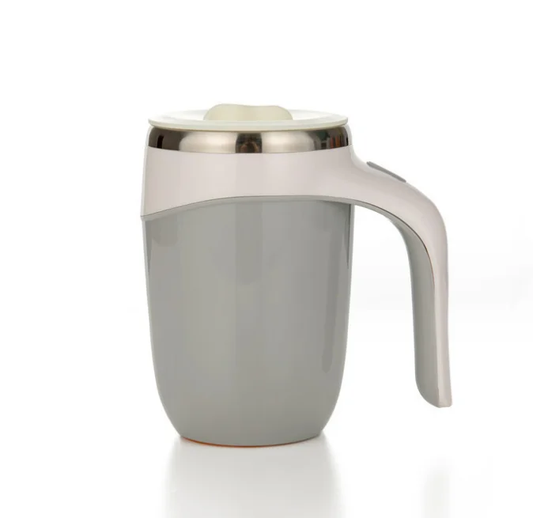
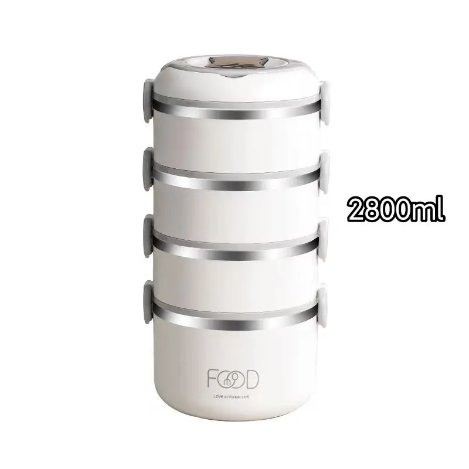

In this playbook
Ask an answer engine "304 or 316 stainless for a water bottle?" or "FOB or CIF for a first import?" and you will usually get a structured trade-off with a recommendation. That is not an accident. Comparison queries are where generative search is most useful, and the pages that get quoted share a recognizable shape. For a B2B manufacturer, this is the highest-leverage content format you are probably underusing: it matches how buyers actually decide, and it is unusually friendly to machine extraction.
1. Why comparison queries are an AI sweet spot
Generative engines are asked to resolve uncertainty. An either-or question hands them a clean task: enumerate the options, apply criteria, and recommend. To do that, the engine needs source passages that already contain the options, the criteria and a conclusion in compact, attributable form. Most marketing pages fail this test — they describe one product in adjectives. A good comparison page hands the engine the whole decision in one chunk.
There is a second reason. Answer engines favor content whose structure mirrors the question. A page titled "304 vs 316 Stainless Steel for Drinkware" maps almost word-for-word onto the user's prompt. The entity names match, the comparison relation is explicit, and the answer can be lifted with a citation. Title-to-query alignment is a quiet but real ranking factor in cited content.

2. Three comparison formats worth building
Not all comparisons are equal. For manufacturers, three formats consistently earn citations and leads without crossing into competitor-bashing:
| Format | Example | Why engines cite it |
|---|---|---|
| Material / grade | 304 vs 316 stainless; silicone vs EPDM gaskets | Objective properties; clear criteria; stable facts |
| Process / method | OEM vs ODM; FOB vs CIF vs DDP | Matches procurement decisions; structured trade-offs |
| Specification choice | 20ft vs 40ft; 500 ml vs 750 ml; straw materials | Numeric, scannable, easy to tabulate |
Avoid the fourth format — "us versus named competitor" — unless you can cite neutral third-party data. Engines and readers both discount self-serving verdicts, and a factual category comparison travels further than a rival takedown.
3. Anatomy of a citable comparison page
A comparison page that gets quoted is built in a specific order. The goal is to make the answer extractable in the first paragraph and verifiable in the rest.
| Block | What to write | Purpose for AI retrieval |
|---|---|---|
| Direct answer | 2–3 sentences naming the default choice and the condition that flips it | One self-contained chunk the engine can quote |
| Criteria table | Options as rows, criteria as columns, concrete values | Structured, tabled facts are easy to attribute |
| Per-option prose | A short paragraph for each option with numbers and trade-offs | Gives the engine alternate passages to pull |
| Explicit verdict | "Choose X if…, choose Y if…" for distinct use cases | Mirrors the recommendation the user asked for |
| Short FAQ | 3–4 questions with concise answers | Matches follow-up prompts; FAQPage schema |

4. Write the verdict, not just the table
Many comparison pages stop at the table and expect the reader to decide. That leaves the recommendation — the part the engine most wants — unstated. State it plainly and tie it to conditions: "For cold drinks, 304 is sufficient; choose 316 when the product regularly sees salt or acidic contents." A conditional verdict is more useful than a single winner because it is true in more situations, and it gives the engine a nuanced sentence to quote.
Tie the verdict to concrete numbers wherever possible. Ranges, temperatures, tolerances and lead times are the facts engines reuse. A page that says "316 is more corrosion resistant" is weaker than one that says what 316 contains and when the premium pays for itself. Precision is a citation magnet.
5. The four signals engines cross-check
Structure gets you extracted; trust gets you chosen. When an engine has several comparison pages to pick from, it leans on four signals:
- Entity clarity. The page names the exact options and the publisher organization consistently, so the answer can be attributed to a real source.
- Direct answers. A first-paragraph answer that matches the question, rather than a slow build-up.
- Provenance. Facts the engine can trace — a manufacturer publishing its own specs and test conditions becomes a primary source.
- Structured data. FAQPage markup, and ItemList or Product schema where appropriate, plus a clean sitemap and llms.txt entry.
Notice that three of the four are things you control on your own site. Comparison content is unusually self-contained: you do not need external coverage to be credible if you are the manufacturer publishing first-party facts about your own products and processes.
6. Turn comparisons into a cluster
A single comparison page can be cited. A connected set of them becomes a topical authority. Each page should link to adjacent decisions: a material comparison links to the food-contact compliance guide; an incoterm comparison links to the landed-cost model; a lid comparison links to the leak-testing guide. These internal links help a crawler understand the relationship between pages and give an engine several routes to the same entity.
Keep one comparison per decision. Two pages answering the same question compete with each other and split citation signals. Instead, widen the cluster with new decisions that buyers actually face — capacity, colour matching, packaging, inspection — each with its own clean answer-first structure.
Want content your buyers' AI assistant actually quotes?
We build product and sourcing content for drinkware brands, including comparison pages structured for answer engines. Tell us your products and markets and we will propose a comparison cluster you can own.
7. A 30-day pilot and how to measure it
You do not need a full content program to test this. Run a small, measurable pilot:
- Week 1: list the ten either-or questions buyers ask you most; pick three with clear criteria.
- Week 2: write one comparison page each with the five-block structure above and FAQPage schema.
- Week 3: wire the pages into your sitemap, llms.txt and internal links; confirm AI crawlers are allowed.
- Week 4: test a fixed set of prompts in ChatGPT, Perplexity and Gemini and log whether your pages are cited.
Measure two things: citation frequency for your tracked prompts, and assisted inquiries — emails that mention a comparison topic. Citation is the leading indicator; inquiries are the one that pays. Judge the pilot after 30 days, then expand to the rest of the question list.

8. FAQ
Why do AI engines cite comparison pages so often?
Because they match either-or questions and put options, criteria and a verdict into extractable text and tables that are easy to quote and attribute.
Should a comparison page name competitors?
For B2B, category comparisons (materials, processes, specs) are safer and more citable than attacks on named rivals.
What structure makes a comparison page citable?
Direct answer first, criteria table, short per-option prose, an explicit use-case verdict, and a concise FAQ with proper schema.
Does comparison content drive B2B leads?
Indirectly but measurably — it puts your brand inside the buyer's decision, and a low-friction email link turns the citation into an inquiry.
Working on your AI visibility? Let's compare notes.
Send us your site and the questions buyers ask you most. We will tell you which comparisons are worth building first — no pitch, just a practical starting point.